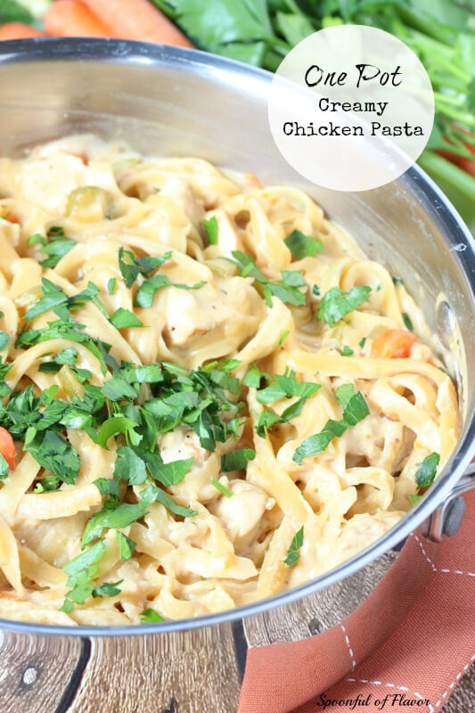

One Pot Creamy Pasta

Description
Easy to make pasta. Covers meat, veggies, and carbs.
Ingredients
- Pasta of your choice
- Cream Cheese
- Chicken
- Chicken Broth
- Butter
- Milk
Steps
- Cut chicken to 1-inch pieces and add butter to skillet. Add chicken on medium high heat until medium brown.
- Mince and add garlic then saute for a minute.
- Add uncooked pasta and chicken broth. Stir to dissolve any browning bits. Place a lid until boil on medium high heat.
- Stir and put on low heat. Stir four times every two minutes, or until the pasta is tender.
- Add milk and cream cheese and stir over medium heat until all combined.